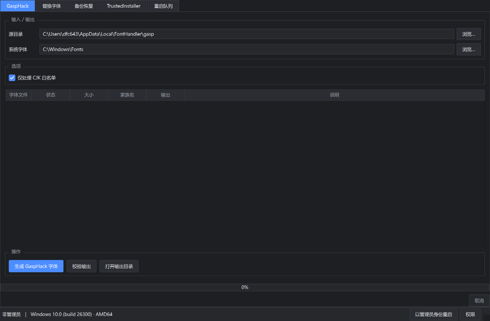
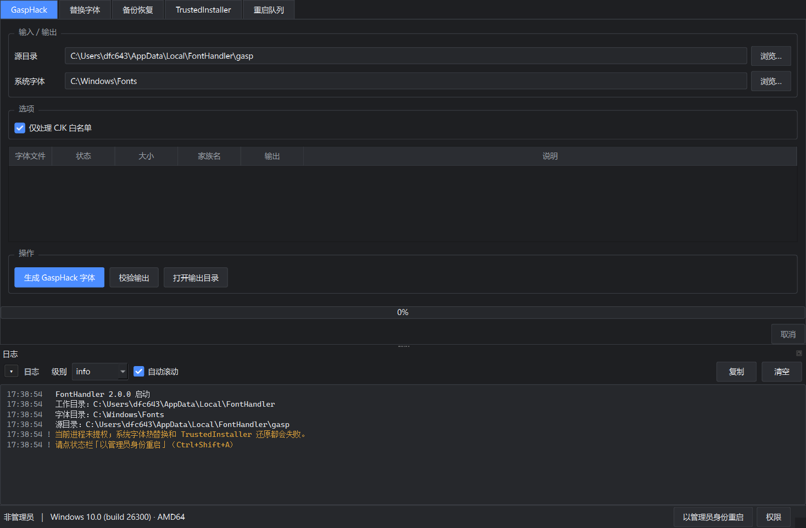
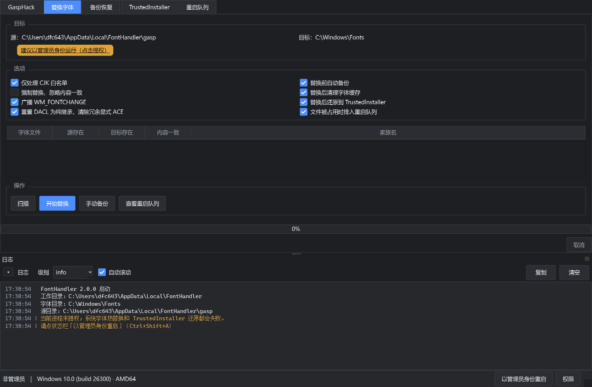
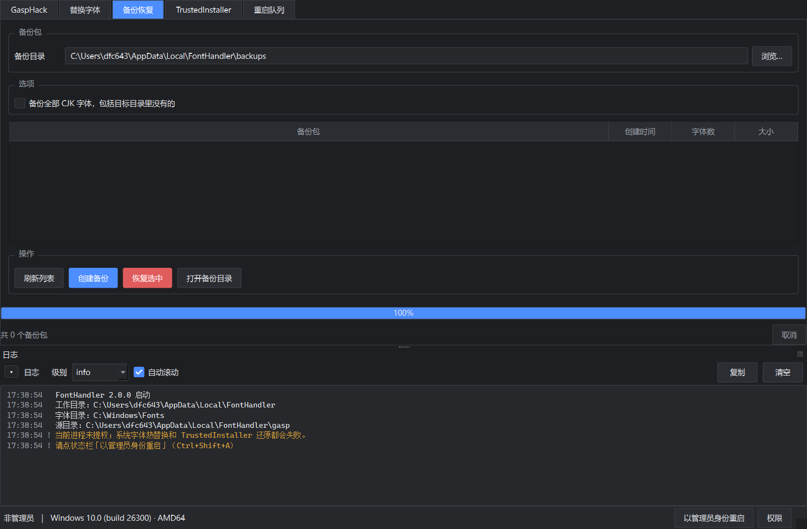
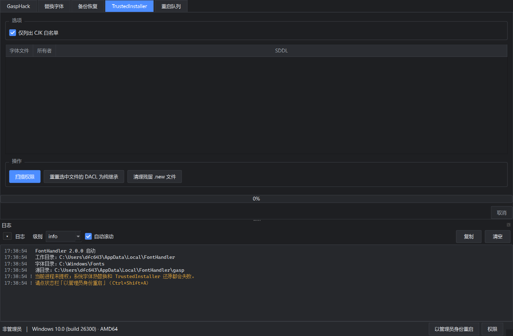
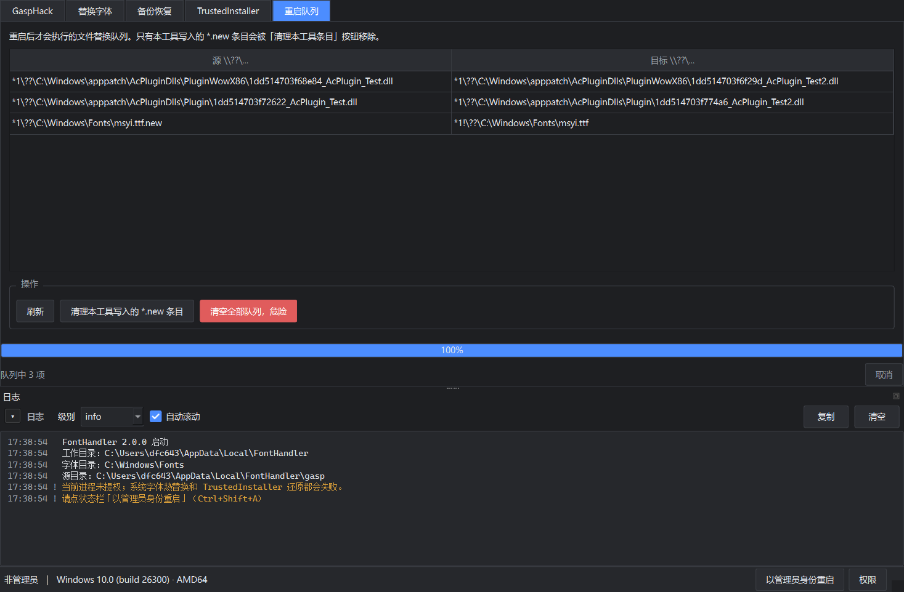

GaspHack 页面：选择字体范围与像素密度行为，右侧实时预览渲染结果
解决什么问题
中文显示发虚
GaspHack 按字号切换不同的 hinting 与网格拟合参数，字形轮廓不变。整套处理在界面里完成，TTC 原地处理，不需要拆分再重组。
改完不生效
系统字体有缓存，替换需要处理文件锁、所有者与 FontCache 服务。界面提供完整流程：备份 → 替换 → 刷新缓存，被占用的文件自动进重启队列。
改完不敢还原
替换前自动备份原始文件与安全描述符。设成 TrustedInstaller 所有者之后依然可以改回来，不需要手动 takeown 加 icacls。
五个页面





重启后自检
替换完成后重启电脑。重启队列里的字体在启动时生效，登录后 FontHandler 会自动运行一次：
- 清理字体缓存 —— 停在服务状态删掉缓存，让它下次启动时按新字体重建
- 校验权限 —— 逐个确认所有者确实是 TrustedInstaller
- 有问题就提示 —— 列出异常字体，可以一键从备份还原
所有者不对是登录界面出问题的常见原因：登录界面用的就是这些字体，一旦所有者在管理员账户上，可能进不去桌面。自检在还能登录时发现它，并给出还原入口。
权限处理
把字体所有者改成 TrustedInstaller 需要三样东西同时成立：
- 提升的令牌 —— 用
TokenIsElevated判断 - 开启的特权 ——
SeRestorePrivilege、SeTakeOwnershipPrivilege、SeBackupPrivilege、SeSecurityPrivilege - 能写 DACL —— 前两项特权是前提
界面状态栏有提权入口，也有「权限」按钮可以查看 Windows 实际授予了哪些特权，不用猜。
安装
免安装版
从 Releases 下载 FontHandler-v2.0.0.exe，直接运行。同目录提供 SHA256SUMS.txt 校验。
自行运行
需要 Python 3.10 以上：
pip install -r requirements.txt
python run.py数据位置
全部落在 %LOCALAPPDATA%\FontHandler，不污染系统目录：
gasp/—— 处理好的字体输出backups/—— 替换前的备份userdata/—— 配置crash.log—— 崩溃记录
质量
97 项回归测试，覆盖 SFNT 解析与 GaspHack 字节等价、ACL 往返、特权错误码、提权链路、所有者设置失败时的中止行为与重启后自检。
python selftest.py